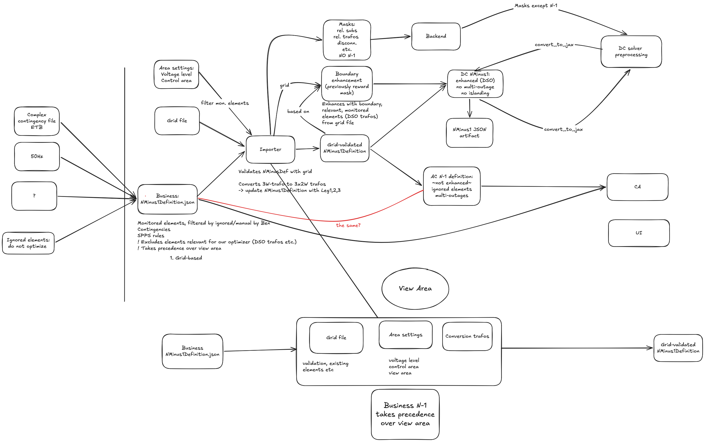

ADR-001: CRAC rework ToOp#
Context and Problem Statement#
This document describes a high level rework of the ToOp CRAC format including visions to move closer to the powsybl APIs. The proposal was opened on 26.09.2026 by Nico Westerbeck.
When we started the project, we assumed area-wise settings, i.e. that we do not get a list of N-1 cases, actions, monitored items, etc but just areas in which we monitor everything and can switch everything. While this approach led us to deliver results early without large configuration requirements, it proves difficult in an operational perspective, where very precise configuration is paramount. The aim of this proposal is to deliver a long, medium and short term view on how to structure the (Contingency list, Remedial Actions and additional Constraints) CRAC definition for ToOp.
Interestingly, OpenRAO did exactly the opposite. Instead of defining catch-all CRACs, they require an in-depth definition of every pair of outaged element, monitored element together with their limits set. This results in very large crac files that tend to work only on the specific date they were intended for, even if customizability is maximal.
Currently, in ToOp, we have area settings that define the areas for N-1, optimized elements and where switching is possible. We can not take into account individual optimized elements outside the area and we could not exclude from the areas. The exclusion problem has been solved through the introduction of ignore lists, however these ignore lists are currently only ignoring optimized elements.
From the area-settings, we translate within multiple steps towards the data formats required in the DC and AC solver. The AC solver requires a N-1 definition json, which is first created in the importing based on the area settings, but then reworked during preprocessing to reflect only what is possible to compute in our DC solver at the moment. Furthermore, masks are created that first reflect the area settings and then later the final N-1 cases in the DC and AC solvers.
Furthermore there is a naming conflict, "monitored" in ToOp terms means "optimized" in orao terms.
The question is therefore how the CRAC definition for ToOp shall be structured.
Decision Drivers#
- In operation a very precise configuration is paramount, which area-wise settings can not deliver.
- It shall not be necessary to build a crac file for every single optimization run, a definition shall be reusable across multiple runs.
- People who start with ToOp shall still be able to optimize any grid file without large configuration requirements.
- The definition shall move closer to the powsybl APIs and in the long term be shared with ORAO, so that optimization solutions can be chained and reused in different business use-cases.
- There are elements that shall not be healed but also not be made worse (e.g. DSO trafos), and elements below their limit that shall keep a distance to it. Both need limits that are derived from the initial loadflow.
- The engine shall not be forced to honor arbitrary input formats.
Considered Options#
- General rules with specific overwrites
- Area-wise settings only
- Fully specified CRAC as in OpenRAO
Decision Outcome#
Chosen option: "General rules with specific overwrites", because purely autogenerated is not working and fully defining every single co/cb/limit case is also not working.
The long term vision would be, in collaboration with the ORAO team, to build a holistic API with just the right degree of customizability, but such that it is not necessary to build a crac file for every single optimization run and instead reuse it across multiple runs.
The terminology, examples for the resulting limits and further details are documented in the design details.
Long Term Vision#
Long term, we have a unified CRAC API for Topology/Congestion, Topology/Voltage, Redispatch/Congestion and Redispatch/Voltage. Common aspects such as optimized/monitored elements or outages share a format, while individual considerations such as degree of flexibility of switching within the station can be defined use-case specific. The common API is the enabler for flexibly chaining and reusing optimization solutions in different business use-cases.
For this, we envision a "detail overwrites general rule" setting, in which general rules (e.g. areas) can be amended with specific details. An overwrite can conceptually alter, add or remove an inferred rule. The "remove" part is especially tricky as the current ORAO Crac definition does not have this capability.
Step 1: Monitored/Observed rework#
First step will be to remove view and n-1 areas from the importing and instead retain them as helper scripts or a small module. The area logics can be used if no input N-1 definition is available before an invocation of the core ToOp logic (importing). However, the importing will only look at the input N-1 definition.
The format-specific translations will live in the ingress, and the ingress will translate to input N-1 definition json format. E.g. the belgian N-1 format will be translated by the ingress towards input N-1 json. For the UCTE/CGMES merge, we will likely still have area definitions and will use the scripts as part of the ingress, creating an input N-1 file.
In general, the view on our ingress should be that it transforms all data into the format that the internal engine expects, instead of forcing the engine format to honor arbitrary csv formats.
The N-1 format thus has to hold information about monitored, optimized and double limits. The double limit band may be stored per-element.

Consequences#
- Good, because the configuration can be as precise as the operation needs it, while general rules keep it small enough to be reused across multiple runs.
- Good, because the importing only looks at the input N-1 definition and the format-specific translations live in the ingress.
- Good, because view and n-1 areas stay available as helper scripts for people starting with ToOp.
- Bad, because the "remove" part of an overwrite is especially tricky, as the current ORAO Crac definition does not have this capability.
- Bad, because displaying results for alternative limits needs a UI concept. It is not intuitive to claim that a monitored item sits at 100% while it actually is at 125%.
- Bad, because loading is currently hard-coded into the loadflow results, which will not scale with multiple artificial limits.
- Neutral, because the proposal is not formulated for TATL yet, everything only holds for PATL.
- Neutral, because we assume that all limits that hold for ToOp also hold for ORAO, different limits for redispatch and topology are not covered.
Confirmation#
Not defined yet.
Benefits and Drawbacks of each option#
General rules with specific overwrites#
General rules (e.g. areas) can be amended with specific details, where an overwrite can alter, add or remove an inferred rule.
- Good, because general rules keep the definition small and reusable, while specific details give the precision where it is needed.
- Good, because common aspects such as optimized/monitored elements or outages can share a format across Topology/Congestion, Topology/Voltage, Redispatch/Congestion and Redispatch/Voltage.
- Bad, because the "remove" part is especially tricky, as the current ORAO Crac definition does not have this capability.
Area-wise settings only#
Areas define where we monitor everything and can switch everything, as it is today.
- Good, because it delivers results early without large configuration requirements.
- Bad, because it proves difficult in an operational perspective, where very precise configuration is paramount.
- Bad, because individual optimized elements outside the area can not be taken into account, and exclusions are only possible through ignore lists which currently only ignore optimized elements.
Fully specified CRAC as in OpenRAO#
An in-depth definition of every pair of outaged element and monitored element together with their limits.
- Good, because customizability is maximal.
- Bad, because it results in very large crac files.
- Bad, because the files tend to work only on the specific date they were intended for.
Review Date#
Not set yet. The ADR is still proposed, the review date defaults to one year after it has been accepted.
References#
- Design details of this ADR: terminology, examples, rules for limits and the display of results.